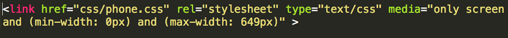
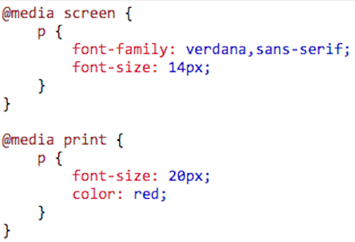
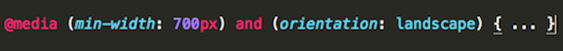
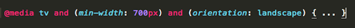
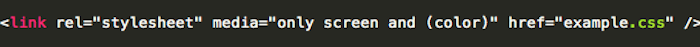

Your browser doesn't support the features required by impress.js, so you are presented with a simplified version of this presentation.
For the best experience please use the latest Chrome, Safari or Firefox browser.
Media Queries
by Alex, Drew, Nathan, and Evan
What media queries allow you to do is manipulate the display of your website based on question you ask the browser. Making your website more user friendly between platforms.
This webpage is in a regular browser has a two column layout.
Same webpage displayed on a tablet has a single column layout.
Same webpage displayed on an iPod.
The webpage displayed on ipod with media query vs. without a media query
Now we will get into how this works and why.
Syntax:
Now we will discuss how a media query works.

This is a simple example of the a media query in action.
 This code renders the tablet compatibility for the webpage we witnessed earlier.
This is where we get into the arguements for media queries.
@media
This is at the root of the media query. @media starts all queries to the browser to gain information about the environment the webpage is being displayed in.
The @media rule allows different style rules for different media in the same style sheet. The style in the example tells the browser to display a 14 pixels Verdana font on the screen. But if the page is printed, it will be in a 20 pixels font, and in a red color
Using @media is simple if you know how the logic works.
These are the basic logical operators that can follow @media:
and, ' , ' , not, only
and:
This is the logical and. Both arguments have to be true to return true. Here is an example:


If the min-width is at least 700px and the orientation is landscape then the css style is applied. The second example is similar to the first but asks if the browser is on a tv.
, :
This is the logical or. Only one of the arguments have to be true to return true. Here is an example:
If any of these arguments are true then the css style is applied.
not :
This is the logical not. Not takes the opposite of what the boolean would evaluate to. Here is an example:
This evaluates as this:
That means not x and not y if they both evaluate to tru then the whole agruement evaluates to true.
not :
This is the logical not. Not takes the opposite of what the boolean would evaluate to. Here is an example:
This evaluates as this:
That means not x and not y if they both evaluate to tru then the whole agruement evaluates to true.
only :
This prevents older browsers from applying newer features. Here is an example:

The only keyword prevents older browsers that do not support media queries with media features from applying the given styles.
With media queries your webpages will still look great on future technologies. And you would like to know more check out W3 Schools
Thank you for your time!